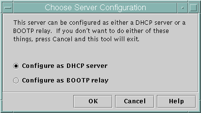
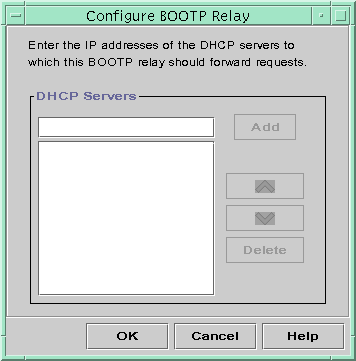
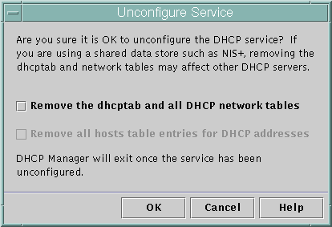

| Previous | Next |
1. Solaris TCPIP Protocol Suite (Overview)
2. Planning an IPv4 Addressing Scheme (Tasks
3. Planning an IPv6 Addressing Scheme (Overview)
4. Planning an IPv6 Network (Tasks)
5. Configuring TCP/IP Network Services and IPv4 Addressing (Tasks)
6. Administering Network Interfaces (Tasks)
7. Enabling IPv6 on a Network (Tasks)
8. Administering a TCP/IP Network (Tasks)
9. Troubleshooting Network Problems (Tasks)
10. TCP/IP and IPv4 in Depth (Reference)
12. About Solaris DHCP (Overview)
13. Planning for DHCP Service (Tasks)
14. Configuring the DHCP Service (Tasks)
Configuring and Unconfiguring a DHCP Server Using DHCP Manager
How to Configure a DHCP Server (DHCP Manager)
How to Configure a BOOTP Relay Agent (DHCP Manager)
How to Unconfigure a DHCP Server or a BOOTP Relay Agent (DHCP Manager)
Configuring and Unconfiguring a DHCP Server Using dhcpconfig Commands
How to Configure a DHCP Server (dhcpconfig -D)
How to Configure a BOOTP Relay Agent (dhcpconfig -R )
How to Unconfigure a DHCP Server or a BOOTP Relay Agent (dhcpconfig -U)
15. Administering DHCP (Tasks)
16. Configuring and Administering DHCP Clients
17. Troubleshooting DHCP (Reference)
18. DHCP Commands and Files (Reference)
19. IP Security Architecture (Overview)
21. IP Security Architecture (Reference)
22. Internet Key Exchange (Overview)
24. Internet Key Exchange (Reference)
25. Solaris IP Filter (Overview)
28. Administering Mobile IP (Tasks)
29. Mobile IP Files and Commands (Reference)
30. Introducing IPMP (Overview)
31. Administering IPMP (Tasks)
Part VI IP Quality of Service (IPQoS)
32. Introducing IPQoS (Overview)
33. Planning for an IPQoS-Enabled Network (Tasks)
34. Creating the IPQoS Configuration File (Tasks)
35. Starting and Maintaining IPQoS (Tasks)
36. Using Flow Accounting and Statistics Gathering (Tasks)
Configuring and Unconfiguring a DHCP Server Using DHCP Manager
This section includes procedures to help you configure and unconfigure a DHCP server with DHCP Manager. Note that you must be running an X Window system such as CDE or GNOME to use DHCP Manager.
DHCP Manager can be run as superuser with the /usr/sadm/admin/bin/dhcpmgr command. See About DHCP Manager for general information about the utility. See How to Start and Stop the DHCP Service (DHCP Manager) for more detailed information about running DHCP Manager.
When you run DHCP Manager on a server that is not configured for DHCP, the following screen is displayed. You can specify whether you want to configure a DHCP server or a BOOTP relay agent.
Figure 14-1 Choose Server Configuration Dialog Box in DHCP Manager
Configuring DHCP Servers
When you configure a DHCP server, DHCP Manager starts the DHCP Configuration Wizard, which prompts you for information that is needed to configure the server. The initial screen of the wizard is shown in the following figure.
Figure 14-2 DHCP Configuration Wizard's Initial Screen

When you finish answering the wizard prompts, DHCP Manager creates the items that are listed in the following table.
Table 14-1 Items Created During DHCP Server Configuration
How to Configure a DHCP Server (DHCP Manager)
Before You Begin
Make sure that you have read Chapter 13, Planning for DHCP Service (Tasks) before you configure your DHCP server. In particular, you should use the guidelines in Making Decisions for Your DHCP Server Configuration (Task Map) to help you perform the following tasks:
Select the system that you want to use as a DHCP server.
Make decisions about your data store, lease policy, and router information.
- Become superuser on the server system.
- Start DHCP Manager.
#/usr/sadm/admin/bin/dhcpmgr &
- Choose the option Configure as DHCP Server.
The DHCP Configuration Wizard starts, to help you configure your server.
- Select options, or type requested information, based on the decisions you made in
the planning phase.
If you have difficulty, click Help in the wizard window to open your web browser and display help for the DHCP Configuration Wizard.
- Click Finish to complete the server configuration when you have finished specifying the requested information.
- At the Start Address Wizard prompt, click Yes to configure IP addresses for
the server.
The Add Addresses to Network wizard enables you to specify which addresses to place under the control of DHCP.
- Answer the prompts according to decisions you made in the planning phase.
See Making Decisions for IP Address Management (Task Map) for more information. If you have difficulty, click Help in the wizard window to open your web browser and display help for the Add Addresses to Network wizard.
- Review your selections, and then click Finish to add the IP addresses to
the network table.
The network table is updated with records for each address in the range you specified.
See Also
You can add more networks to the DHCP server with the Network Wizard, as explained in Adding DHCP Networks.
Configuring BOOTP Relay Agents
When you configure a BOOTP relay agent, DHCP Manager takes the following actions:
Prompts you for the IP address for one or more DHCP servers to which requests should be relayed
Stores settings needed for BOOTP relay service
The following figure shows the screen displayed when you choose to configure a BOOTP relay agent.
Figure 14-3 Configure BOOTP Relay Dialog Box in DHCP Manager
How to Configure a BOOTP Relay Agent (DHCP Manager)
Before You Begin
Make sure that you have read Chapter 13, Planning for DHCP Service (Tasks) before you configure your BOOTP relay agent. In particular, you should see Selecting a Host to Run the DHCP Service for help in selecting the system to use.
- Become superuser on the server system.
- Start the DHCP Manager.
#/usr/sadm/admin/bin/dhcpmgr &
If the system has not been configured as a DHCP server or BOOTP relay agent, the DHCP Configuration Wizard starts. If the system has already been configured as a DHCP server, you must first unconfigure the server. See Unconfiguring DHCP Servers and BOOTP Relay Agents.
- Select Configure as BOOTP Relay.
The Configure BOOTP Relay dialog box opens.
- Type the IP address or host name of one or more DHCP servers,
and click Add.
The specified DHCP servers must be configured to handle BOOTP or DHCP requests received by this BOOTP relay agent.
- Click OK to exit the dialog box.
Notice that DHCP Manager offers only the File menu to exit the application and the Service menu to manage the server. The disabled menu options are useful only on a DHCP server.
Unconfiguring DHCP Servers and BOOTP Relay Agents
When you unconfigure a DHCP server or a BOOTP relay agent, DHCP Manager takes the following actions:
Stops the DHCP daemon (in.dhpcd) process
Removes the /etc/inet/dhcpsvc.conf file, which records information about daemon startup and the data store location
The following figure shows the screen that is displayed when you choose to unconfigure a DHCP server.
Figure 14-4 Unconfigure Service Dialog Box in DHCP Manager
DHCP Data on an Unconfigured Server
When you unconfigure a DHCP server, you must decide what to do with the dhcptab table and the DHCP network tables. If the data is shared among servers, you should not remove the dhcptab and DHCP network tables. If the tables are removed, DHCP would become unusable across your network. Data can be shared through NIS+ or on exported local file systems. The file /etc/inet/dhcpsvc.conf records the data store used and its location.
You can unconfigure a DHCP server but leave the data intact by not selecting any of the options to remove data. If you unconfigure the server and leave the data intact, you disable the DHCP server.
If you want another DHCP server to take ownership of the IP addresses, you must move the DHCP data to the other DHCP server. You must move the data before you unconfigure the current server. See Moving Configuration Data Between DHCP Servers (Task Map) for more information.
If you are certain you want to remove the data, you can select an option to remove the dhcptab and network tables. If you had generated client names for the DHCP addresses, you can also elect to remove those entries from the hosts table. Client name entries can be removed from DNS, /etc/inet/hosts, or NIS+.
Before you unconfigure a BOOTP relay agent, be sure that no clients rely on this agent to forward requests to a DHCP server.
How to Unconfigure a DHCP Server or a BOOTP Relay Agent (DHCP Manager)
- Become superuser.
- Start DHCP Manager.
#/usr/sadm/admin/bin/dhcpmgr &
- From the Service menu, choose Unconfigure.
The Unconfigure Service dialog box is displayed. If the server is a BOOTP relay agent, the dialog box enables you to confirm your intention to unconfigure the relay agent. If the server is a DHCP server, you must decide what to do with the DHCP data and make selections in the dialog box. See Figure 14-4.
- (Optional) Select options to remove data.
If the server uses shared data through NIS+ or in files shared through NFS, do not select any options to remove the data. If the server does not use shared data, select one option or both options to remove the data.
See DHCP Data on an Unconfigured Server for more information about removing data.
- Click OK to unconfigure the server.
The Unconfigure Service dialog box and DHCP Manager are closed.
| Previous | Next |